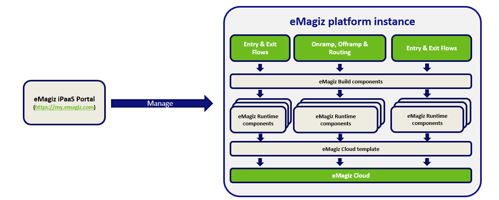

howto/archive-candidate-eMagiz_Platform_release_considerations
eMagiz platform release considerations
Objective of this document is to understand the key considerations around the versioning and regular updates of the technical components of the eMagiz platform.
Last update September 12th 2020
Platform components
- 1. Buildnumbers Every flow created has a specific build number. This build contains the eMagiz software components that work in conjunction with the flows as configured in the Create phase of the eMagiz Portal.
- 2. Runtime This is the component in which the individual integration flows are deployed into. It's a Java based application container that can run in the Cloud or Local. A runtime is visually displayed and described in the eMagiz iPaaS Portal as a container (holding the onramps, offramps, routing, error) or a connector (holding the exits and entries)
- 3. Cloud templates This provides the components such as OS, Java versions, etc. in which the runtime components can operate in. On top of that these templates also provide various auto-healing and managing tools to enhance the performance and stability of the platform instance. These are Cloud platform specific.
- 4. eMagiz iPaaS Portal Provides web based access to the eMagiz project where users can create, update and delete integrations across the Test, Acceptance and Productions environments. Holds access to all configuration options of the eMagiz platform instance required to run these integrations in an optimal manner.
- 5. eMagiz Connector for Mendix Contains the Mendix module that allows the Mendix project to interact with the eMagiz iPaaS instance. Holds the configuration details to connect to the eMagiz instance as well as the Java actions that can be refered to inside Mendix Microflows

Key considerations
- The eMagiz iPaaS Portal (https://my.emagiz.com) is updated every 2 weeks to allow for user interface improvements and improvements to the integration model. According to the EULA, clients can expect a downtime of max. 2 hours of the eMagiz Portal. All other services inside client platform such as messaging and monitoring services, are not affected and will continue to run as normal.
- All buildnumbers released are always backwards compatible with previous build numbers. We are dedicated to ensure client platforms are unaffected by these buildnumbers improvements.
- eMagiz plans a major release once per year that involves migration activitities of the current client installation. A separate eMagiz Release should be created and tested to isolate a potential impact on the current configuration. eMagiz makes best efforts to make these migrations as smooth as possible with as little effort as possible for client installations.
- The eMagiz platform uses Cloud templates that are managing the Cloud machines where the different runtime components are running on. These Cloud templates are released per Cloud environment such as AWS and are updated between on average 2 times per year. The deployment of these can be done via the eMagiz Portal, and per availability zone in case a failover setup is used. The expected downtime for failover setups is none, for single lane setups between 10 and 15 minutes. Messaging traffic is only impacted with a delay - no messages are lost.
- Each of the components listed in the previous section are supported for 2 years from the moment a next version is released.
Current versions
Runtimes
Non-supported versions
- Version 5.0.0 - released July 27th 2018 --> Exception for client running in the ROOT Cloud environment - this version is still supported for that environment
Supported versions
- Version 5.0.2 - released October 19th 2018
- Version 5.0.3 - released May 17th 2019
See also release notes under the Community section of the eMagiz iPaaS Portal or this link: https://emagiz.github.io/docs/release-notes/index_runtime.html
Cloud templates
Non-supported versions
- R3
- R4
- R5
- R6
Supported versions AWS
- R10 Single Lane
- R12 Single Lane
- R7 Double lane
- R8 Double lane
Supported versions ROOT
- V24
See also release notes under the Community section of the eMagiz iPaaS Portal or this link: https://emagiz.github.io/docs/release-notes/index_cloud.html
Build numbers
Non-supported versions
- All build numbers lower than build 46 (released September 9th 2019)
Supported versions
- All build numbers higher than or equal to build 46
See also release notes under the Community section of the eMagiz iPaaS Portal or this link: https://emagiz.github.io/docs/release-notes/index_build.html
eMagiz Connector for Mendix
Non-supported versions
- All EMC versions lower than version 3.0.2
Supported versions
- All EMC versions higher of equal than version 3.0.2
See also release notes under the Community section of the eMagiz iPaaS Portal or this link: https://emagiz.github.io/docs/release-notes/index_runtime.html